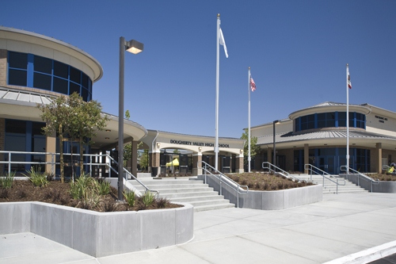

Haarlem Quiz Bowl

What is Quiz Bowl?
Quiz Bowl is an academic buzzer competition resembling the popular TV show Jeopardy.

High School Quiz Bowl
In August 2013, Haarlem Quiz Bowl started operations in Dougherty Valley High School.

Middle School Quiz Bowl
In 2014, Haarlem Quiz Bowl decided to expand the Quiz Bowl experience to the middle schoolers.